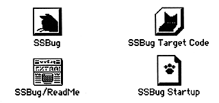

SSBug distinguishes the Japanese environment such as Kanji Talk7 (exactly the environment where the Japanese script is running), and displays Japanese when Japanese is available, and displays English when it is not. So the English system works well.

The contents of each file are as follows.
Install as follows: